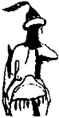

Selcük Aka imiş demek adı. Selcük Aka! Hımm, kulağa hoş geliyor. Bay kızı. Tuğak kimse artık” diye düşündüm yolda. Bir deneme yaptım. Yanımdaki karavaşa sordum. Boşuna dememişler, ya karavaştan ya çocuktan al sözü diye. Tuğak kimdir ve daha pek çok şey öğrendim. Hanlar Hanı Bayındır Kohen’in kündü kağanı, sübaşısı imiş Tuğak. Uğraş günü Bayındır’ın tuğunu o açarmış. Yarısı içimden yarısı açıktan hafif bir ıslık çaldım. Selcük Aka, Hazar Kağanlığının üçüncü adamının kızıydı demek ki. Bayındır Han ile kündü kağanın arasında bir de “kağan beğ” denilen bir orun daha vardı. Tuhaf kişilerdi şu Batı Türkleri! Adamın unvanında hem beğ vardı hem kağan! Hiç kağan ile beğ aynı yerde yan yana gelir mi? Neyse, bizim yan yana duran iki taşımız bile olmadığını anınca bu sessiz alayı kestim. Şu andaki kağan beğin adı Tosbağa imiş. Gülmemek için yine dudaklarımı ısırdım. Bayındır Han’ın ve kündü kağanın adlarınıysa kız ya bilmiyordu, ya söylemedi. Ona göre onlar Bayındır ve Tuğak’tı. Bayındır Kohen şu anda kentteymiş. Geleli ancak bir hafta olmuş. O gelince kendisini bir gölge gibi izleyen Tuğak da gelmiş. Kağan Beğ Tosbağa ise İdil’de kalmış.
Sonra “başrav” ve “sonrav” diye iki görev adı daha saydı. Anladığım kadarıyla bunlar bizim Şamanlarımız gibi bir şeydiler. Haa, bak bunların her ikisinin de adlarını çok iyi biliyordu kız! Yanakları pembe pembe, yine öyle uykulu yere bakarak:
“Başravın adı Un El Kaplan, sonravın adı Benyamin İncir...” dedi. Bu ikisi hiç geçinemiyormuş, ama Kağan Beğ Tosbağa’ya karşı birlikmişler. Bu üçü hiç geçinemiyorlarmış ama Bayındır Han’a karşı birlikmişler. Han’ı ayakta tutan Tuğak’mış. Tuğak da sırtını orduya dayamışmış. Çok iyi, cesur ve “bahadırmış” Tuğak. Çelikten bir ok ile dolaştığı için lakabı Demir Yaylı imiş. Oğlu olmadığı için kızı Selcük Aka’yı tam bir savaşçı olarak yetiştirmişmiş.
“Öyle sevimli sevimli güldüğüne kanma!” diye uyardı kız. Çok iyi ok atarmış Selcük Aka. Daha yarışlarda okunu yaran olmamış. Çok iyi ata binermiş Selcük...
“Evet gördük,” diye kestim kızı. Kente yaklaşıyorduk. Daha yararlı şeyler öğrenmek gerekti. Öğrendim de. Kıza göre bir de uzaklardaki Salur Kazan Bey varmış. Salur boyunun beği ve Kalın Oğuz’un yabgusu! Sarp, yalçın, bahadır yiğitmiş, Türkeli’nin direği, tülü kuşun yavrusuymuş. Hazar Devleti’ndeki unvanı “beylerbeyi” imiş. Ama bu son yıllarda kayınatası Bayındır Han ile pek kötü bozuşmuşmuş...
Böyle konuşa konuşa Sarkel şarının bakırla kaplı yüksek ağaç kapısına vardık. Kim bilir kaç yüz yıldır çiğnenen toprak kapının önünde bileklere yükselen bir toz olmuş. Kara bir it utanmazca art bacağını kaldırarak kapının menteşesi olan kalın ardıç direğe siyiyor. San-yeşil sıvı, ardıcın üstünde yol yol olup aşağılara kayıyor. Ulaştığı köşecikte toz katılıyor, katılaşıyor. Kurtlar da acaba böyle mi siyer? Usuma geçenlerde yediğim kurt bacağı düşüyor. Kapının iki kanadı ardına kadar açık. Şarın ağaç evleri görünüyor açık kapılar ardında. Bazıları üst üste kondurulmuş. Bunlara şaşkınlıkla bakıyorum. Bir de bildiğim, arabalar üstünde ya da doğrudan toprağa kurulmuş topakevler, çadırlar var. Evlerden, kimi güzel kimi çirkin, türlü kokular geliyor. Küçük ağaçlı bahçelerinde aşlar pişiyor, kazanlar kaynıyor. Tuhaf ağaç evlerin duvarlarında, yerden epeyce yüksekte, ne işe yaradığını anlamadığım iki kanatlı ufak kapılar var. Ne işe yarıyor bunlar? Kuş mu besliyorlar, hani gitsin gelsin diye kuşçuklar? Bunlardan kimileri dışarı doğru açılıyor, çöpler, çişler boşaltılıyor, birinden de eski bir börk sokaklara atılıyor!
Nöbetçi erler sıkıntıdan birbirleriyle güreş tutuyor, izleyenlerden biri kargısına dayanmış esniyor. Sarkel’in kuşbakışı gördüğü ovadaki bütün tarlalarda yatak olmuş yoksul köylüler, oturak olup kalmış yiğitler çalışıyor. Tarla kenarlarında ateşler yakılmış, dumanları göklere yükseliyor. Dev koyun sürüleri alçak tepelerde görünmeyecek denli yavaş yer değiştire değiştire otluyor. Otların en tatlısını buluyor. Kepeneksiz Hazar çobanları kavallarına asılmış, iri ak köpekler tepelerden aşağı koşarak Ten’e giden derelere iniyor. Sığırlar boyunlarına takılan ufak çanları sallaya sallaya dolaşıyor. Havada bulut yok. Havada çıngırak, havada birbirine karışan kaval sesleri, havada kaba avazlı köpek havlamaları, havada barış ve uyku var. Hazar’ı dinliyorum, şamanlar bir sayrının yüreğini dinler gibi. Karavaş, o uykulu sesiyle “işte Sarkel!” diyor. Sessizlik bozulmuyor. Görüyorum, Sarkel’in sol yanında Ten Suyu gümüş ışıltılarla akıyor. Üstünde kayıklar, üstünde gemiler! Akıntıyla aşağı Karadeniz’e akan gemiler, kol gücüyle yukarı çıkan gemiler! Kıyıdaki köle dizileri kalın urganlara asılıyor. Kamçılar arsız ama duymadığım için sessiz şaklamalarla havayı ikiye bölüyor. Davullarla birlikte güm güm vuruyor bu yürek. Davulların inen kalkan tokmakları eşliğinde gemileri akıntıya karşı çekiyor köleler. Yukarı, daha yukarı, acaba nereye kadar? Tatlı tatlı esen yel ara ara acılı üzünçlü türkülerini ulaştırıyor kulaklarıma, duyuyorum. Urus albızlarının çığrışmalarına benziyor ıraktan, bilmiyorum.
O kargısına dayanan er doğruluyor:
“Kündü kağanın gece karavaşı, yanındaki yiğit kimdir?”
Hemen kol kopuzuma el sunuyorum, eliyle “geç... geç...” diyor, tanıtma türkümü beklemeden. Ben Tengere Tardu Tigin, Doğu Türklerinin son tigini, kendi Türkümün, kendi oğuşumun evine elimi kolumu sallayarak giriyorum.
Az eğimli sokaklarında yüksele yüksele, kentin göbeğine doğru gidiyoruz. Birden önüme kaba uzun sakallı, eli kalınca sopalı, koca bir koca dikiliyor. Karakul börkünü alnında geri itiyor.
“Maşiah! Sana saraya gitmek yaraşır mı? Bir karavaş odalığın peşine takılmış nereye gidersin? Yoksulu görmeden bayı görmek olur mu? Dur. Otur. Bir ekşi kımızımızı iç. Bu gece ve istersen her gece konuğum ol!” diyor. Dizginime yapışıyor. Gece karavaşı denen kıza bakıyorum. Başını sessizce önüne eğiyor yoksul. Koca’nın dizginimden çekmesine yol vermiyorum. Kulanımdan atlayıp iki iri pençesini birden öpüyorum. Damarları çıkık ellerinde İnançu amcamın kokusu var. Gözlerim yaşarıyor.
Adı Dede Korkut’muş. Sırtında benim kopuzumun beş katı büyüklüğünde koca karınlı, sarı bir kopuz var. Ozanmış. “Dede” diyorum, yanında kopuzumu tıngırdatmak gibi bir densizlik yapmadan, tanıtıma girişiyorum:
“Dede, Tengere Tardu Tigin ben, Hangay’dan gelirim...”
“Bırak oğul, tiginlik mi kaldı? Hangay dediğin neresidir, bilen var mı! Sen Maşiah’sın oğul. Bir Maşiah gibi davran. Ağır ol. Gören Maşiah desin! Yönetenlerin, ezenlerin, kasanların, kavuranların dibine girme hemen. Bizim sıkıntımıza, bunumuza tıgin neylesin? Bize bir Maşiah gerek oğul!”
Aldı Dede götürdü beni. Geldiğimiz yönün tam tersine gittik, ama çok da gitmeden tek katlı bir evin önünde durduk. Yirmiden artık yaşımda ilk kez böyle bir eve giriyordum. Bizim topak evlerden, çadırlarımızdan ne kadar değişik! Her şeyden önce yuvarlak değil, dört köşesi var. Biz çadıra otağ deriz, bunlar evin içindeki küçük küçük bölmelere oda yani otağ diyor! Bizim barklarımıza, mezarlarımıza benziyor. Tanrım, kişi yaşarken niye böyle bir mezara girer?
Bir keçe kapıyı aralayarak bu otağlardan birine girdik. Neyse, halı kaplı uzunlu kısalı bildik yastıklardan vardı yerde, içerisi karanlıkça olmasına karşın Dede, adına pencere denen duvardaki o dört köşe küçük kapıları açmadı. Oturduk.
Dede’nin bozkırın durumu ve Hazar hakkında anlattıkları yoksul karavaşın anlattıklarına hem benziyor hem de benzemiyordu. Benim nahlat avot sandığım şu Sarkel kurulalı ancak 113 yıl olmuştu. Hazarların, güneyden, Kaf Dagları’ndan bastıran Araplar ile kapışmaları artık sona ermiş, ama doğudan ve kuzeydoğudan ilerleyen bozkır boyları ve Urus orduları yüzünden kağanlıkta tam bir rahatlama olmamıştı. Hazar’ın bozkırın yılmaz bekçisi olduğunu bilen Urum, bu yeni gelişen durum üzerine kesenin ağzını açmış, Sarkel’in yapılmasına çok yardım etmişti. Böylece Doymaduk Han başkanlığındaki Peçenekler ve değişik beyler önderliğinde çapula çıkan Uruslar durdurulmuş, Macarlar batıya doğru savılmıştı. Dayanamadım:
“İyi ya Dede! Bundan iyisi dalda kayısı!”
“Oğul, bildiğin gibi değil. Biz birbirimize düşmek üzereyiz. Oğuz boyları depreniyor. Salur Kazan, Urus ile pek yoldaş oldu bu sıralarda. Peçeneklere, Kimeklere, Kanglılara ve diğer Kuzey boylarına karşı ortak ordular çektikleri çok. Bir kezinde Salur, Urus’u tutsaklıktan çekti kurtardı, bir kezinde de Urus Salur’u. Gerçi aralarında hatif bir çekişme var. Kimin oğul kimin baba olduğu belli değil. Önceleri biti bindiklerinde, Salur Urus’a ‘oglum’ diyordu, Urus da Salur’a ‘baba’. Ama bu Urus’un Salur’u kurtardığı son uğraşta işler değişti. Urus, ‘şimdi ben babayım, artık ben baba olacağım, yoksa oynamam’ diye tutturdu. Salur da ‘daha dün oğlum olan biri nasıl babam olur?’ diye olmazlanıyordu. Neyse araya ben girdim, uzlaştırdım. Şu günlerde Urus, Salur’un dayısı oldu. Artık Urus Koca olarak biliniyor. At Ağızlı Urus Koca.”
“Ne? Sen mi uzlaştırdın?”
“Evet tigin. Ben. Bayat boyundan Dede Korkut, işim ne sanıyorsun? Yanında yalnız kopuz götürür, düğünlerde çalar oynar, budunun eğlencesi bir ozan mı?”
“Peki, şimdi burada ne yapıyorsun?”
“Bu da işin bir bölümü. Bayındır Han katında Oğuz’un elçisiyim! Hem Oğuz’un tek durması için hem de Han’ın Oğuz üzerine er göndermemesi için.”
Hiçbir şey anlamamıştım. Ya da bu işte çeşitli bit yenikleri vardı. Sordum:
“Peki Dede, Urus, Hazar’a yağı ise, Oğuz da Hazar’ın boyları, budunu, Oğuz’u ise, Oğuz’u Urus ile niye uzlaştırdın?”
“Oğul ettik bir iş. Etmesem Oğuz yok olacaktı. Urus kapıdaydı. Hazar’ı severim. Kendi Oğuzumuzdan türemedir, çıkmadır. Ama Oğuz’u daha çok severim, ne de olsa Hazar’ın anasıdır. Şimdi iş Urus Koca’yı Hazar’ın üzerinden uzak tutmakta...”
Biraz anlar gibiydim. Korkut Ata kendini pek güç bir durumda bulmuştu. Oğuz’un komşuları Urus ile sert ve yıkıcı bir savaşa girmesini bu “dayı-yeğen” düzeniyle önleyebilmişti. Hazar’ı da sevdiğinden, bunun Hazar’a dokunmasını istemiyordu. Oğuz’u Hazar’la barışık tutmak gerekiyordu. Başını ağır ağır sallayarak konuşmayı sürdürdü:
“...çünkü ben, Salur Kazan’a anlatmada zorlanıyorum ama Hazar olmazsa, Urus, Oğuz’u iki günde ezer.”
Dede’ye saygım iki kat artmıştı şimdi. Oğuz’u Urus’a karşı korumak için de Hazar bağlantısını canlı tutmak istiyordu. Bu bağlantı korundukça Urus’un Hazar’a saldırması da güçleşirdi. Batı Bozkırında işler gerçekten karışıktı. Korkut Ata, yalnız Oğuz’un elçisi değil, Hazar Kağanlığımdaki en güçlü kişilerden biriydi. Şu benim düşündüklerimi Bayındır Han’ın düşünmemesi olası mıydı? Bunu düşününce Dede’ye saygım üç kat oldu. Kaldı ki Dede, bu duruşu ile Hazar Kağanı Bayındır Kohen’in Oğuz’a karşı istediği gibi kasıp kavurmasını da engellemişti. Kendisine saygım dört kata çıktı. Belki de onun benden beklediği gibi davrandım:
“Dede iyi de, ben Oğuz’un içinden geçtim geldim. Adamların Hazar mazar taktığı yok. Bayındır Han’a demediklerini bırakmıyorlardı. Kağanları olmayan özgür bir boylar birliğiymişler, adları gibi oğuzmuşlar. Bilmem ki Kağan ne diyor bu işe?”
Gür, kart sesi ile kahkahalar atarak güldü. Sırtından çıkarıp duvara astığı kopuzunu gösterdi:
“Şimdilik bununla götürüyoruz işi. Kağan, beni her dinlediğinde Oğuz’un kendisini ne kadar sevdiğini saydığını işitiyor sazımdan!”
Dede’nin kurduğu acun düzeninin çatırdaması ise an meselesiydi. Hazar’ın ve eğer Dede haklıysa, Oğuz’un da durumu çok sallantıdaydı. Hazar-Oğuz ilişkilerinin gerçek durumunu anlarsa Urus Koca her an albızlarını toplayıp güneye inebilirdi. Üstelik, o zaman, aradaki yeni yeğenlik-dayılık ilişkisinden dolayı Oğuz da Hazar’a saldırmak durumunda kalırdı. İçimde bir sezgi, o kötü gün geldiğinde Dede’nin hanları değil Oğuz’u seçeceğini söylüyordu. Son bir soru sordum:
“Dede benim Maşiah olup olmamamın bu işlerle ilgisi ne?”
“Sormayacaksın sandım Tigin! Oğuzlar dahil Hazar Kağanlığı’nda herkes bir kurtarıcı bekliyor. Hemen herkes Doğu’dan Maşiah’ın gelmesinin ve Tikkun olayının yakın olduğunu düşünüyor. Buraya kadar sorun yok, sorun bundan sonrasında. Başrav Un El Kaplan’ın ve Sonrav Benyamin İncir’in türlü çabalarına karşın, bir bölük kişiye göre bizim bu olayı Yeruşalayim’de karşılamamız gerekiyor ki onarımdan sonra o yeryüzü cennetinde olabilelim. Bayındır Han ise böyle bir göçe karşı. Bu son iki yılda kendilerinin Maşiah olduğunu açıklayan dokuz ayrı kişiyi astırdı. Kendisinin atadığı Maşiahların sayısınıysa Tanrı bilir?”
“Başrav ile Sonrav’ı astırsa daha iyi olmaz mıydı? Pek işe yarıyor gibi durmuyorlar.”
“Hah... hah... kötü düşünce değil gibi duruyor ama olmaz. Rav’lar desteklemezse Bayındır Kohen de olmaz. Hazar Kağanlığı da, Oğuz da.”
“Hâlâ anlamadım, ben ne yapacağım?”
“Hiç. Maşiah’sın diyenlere karşı çıkmayacaksın. Bırak öyle bilsinler Tigin!”
“Dede, sen benim kanıma mı susadın? Ölen onuncu Maşiah mı olayım istiyorsun?”
Korkut Ata’dan bir yanıt gelmedi. Bir süredir yel aldığı için sallanıp duruyor sandığım keçe kapının bir eteği açıldı, kalktı, içeri uzunca boylu, yapılı, orta yaşlı bir adam girdi. Görür görmez kim olduğunu anladım.
“Arkanda ben olursam ölmezsin, benim arkamda da ordu var. Önüne gelenin ‘kurtarıcıyım’ diye ortaya çıkmasından bıktık, değil mi Dede? Maşiah, bizim kendi Maşiah’ımız olursa niye öldürelim?” dedi yeni gelen.
“Ya sizin Maşiah’ınız olmazsam?”
“Onuncu sen olursun.”
“Ya gerçekten Maşiah’sam?”
Hazar Kağanlığı’nın kündü kağanı, Demir Yaylı Tuğak, ellerini ellerine çalarak öyle bir gülüş güldü ki enikonu sinirlendim. O katıla katıla gülmesini sürdürerek:
“Tabii, tabii, yüce Maşiah özrümüze bakma artık, birden anlayamadık! Üstelik taa Hangay diye bir yerden gelen bir tiginsin değil mi sen? Neydi büyük dedenin adı bakalım?”
Ciddiye aldım. Almak zorundaydım:
“Bilge Kağan oğlu Urungu İnanç Tigin!”
Tuğak, bu kez halı minderlerin üstüne yatarak, yumruklarıyla onları döverek dakikalarca güldü. Pencere dedikleri yerden bir ışık demeti içeri giriyor, kündü kağanın gözlerine ve yüzüne kadar ulaşıyor, kızıl bıyıklarını ve çıkardığı tozları aydınlatıyordu.
“Öldürdü beni bu çulsuz! Koparttı beni albız eniği! Hay Dede. Tanrı iyiliğini versin. Sen beni güldürdün. O da seni güldürsün. Altıma edersem nedeni sensin Dede! Nereden buldun bu mezar sıçanını? Haah... haah... Ölen ipsiz, nedir o tokanın hali? Son beş yüz yıldır bozkırda böyle tokalı kemer mi kaldı? Ama kurganlarda hâlâ varmış, ne dersin? Hıaahh... hıaahhh... Ne var bakalım daha o denginin içinde?”
Yoksul subaşı biraz sıyırmış gibiydi. Koca kağanlığın tüm savunma işleri, tüm bu yasa Töre tanımaz boylarla uğraşmak, sinirlerini bozmuş olsa gerekti. Hoş görmek gerekti. Ben de öyle yaptım, gülümsedim. Hatta, sıyırmış ile fıydırmışın yoluna gitmek gerektir diye dengimi açtım, gösterdim. Kaftanıma ve Töre kabuklarıma bakmak bile istemedi ama yayımı eline aldı, tarttı. Sonra:
“Ülen deli oğlan, yayın fena değil, nerenin yapısı bu” dedi. Bu alaca karanlıkta tuhaf parlamalar yapan kendi yayını göstererek ekledi: “Yiğit, eğer gerçekten yiğitsen yarışırız ne zaman istersen.” Gülümsemem yayıldı ve genişledi:
“Nesine Tuğak Aga’m?”
“Sen söyle yoksulum, hah... hah... yav sevdim ben bu üşütüğü... ha... ha...”
“Senin okun benim okumu yararsa demin gördüğün kaftanım senin olsun! Öbür türlü olursa sırtındaki şu kaftanın benim olsun mu?”
“Yok yok... Kalsın... Kalsın... Senin şu sırtındaki deri yelek benim olsun. Selcük dağıtır, ben toplarım zaten hah... hay... haaah.”
“Sözünde durmayan yeriti olsun mu?”
“Olsun. Dede tanık ol... olsun... ha... haa... haah...”
Çok değişik nedenlerle olsa da, her ikimiz de karşıdakinin zırdeli olduğunu düşünüyorduk. Gülüşerek ayrıldık.